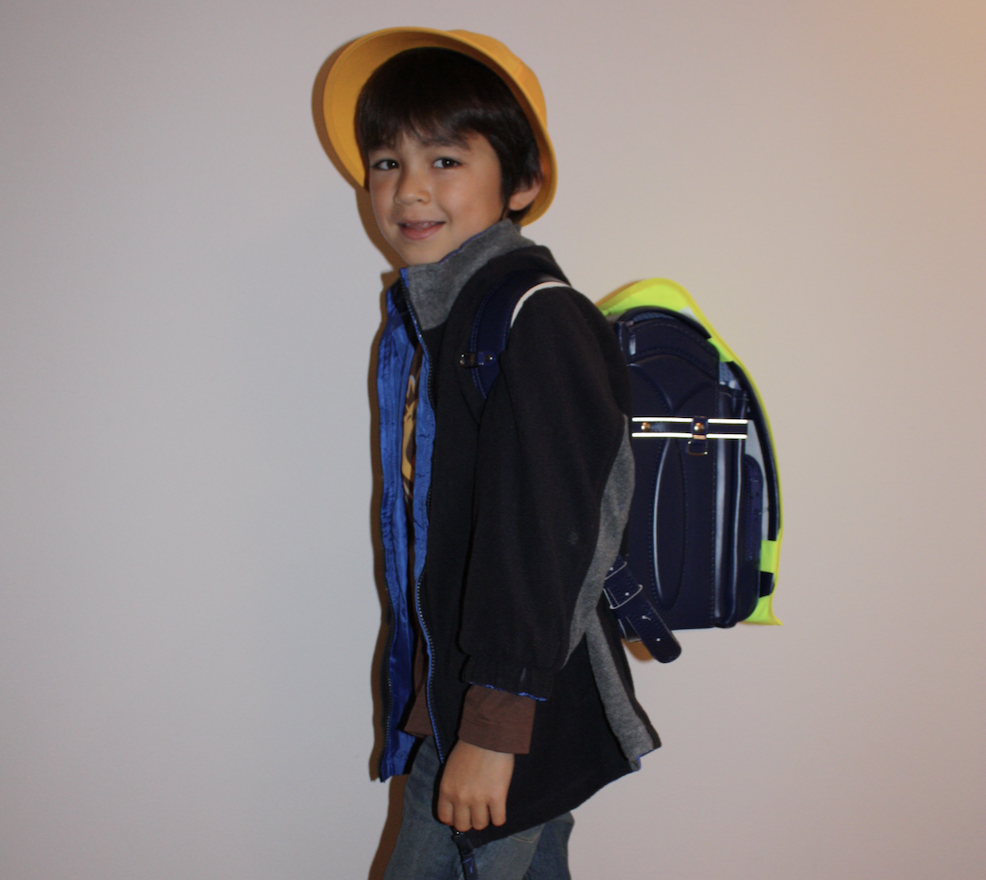
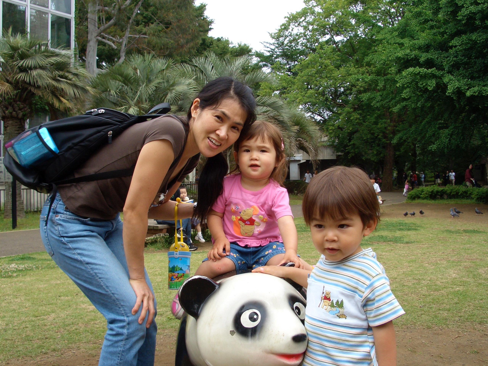

About Me
Hi! My life has been shaped heavily by my mom and the Japanese half that she gave me. This little website is to explore that half—take a walk down with me!
Train Arrival
The train is arriving at the station! This sound takes me back to my childhood, and for any of you that have been to Japan, hopefully it takes you back to your trip!
Japan in the 2000s
This is what my environment was like in times I can't or can hardly remember. Even without my familiarity, I feel like this video exudes nostalgia, so I thought I could include it.
My backpack
Just the image alone brings back memories of walking to elementary school in my uniform and backpack. Fun fact, randoseru were engineered to float in floods, protect the head in earthquakes, and last a child throughout their adolescence! (No wonder they were $700.)
Old Pictures

Tanabata with family, matsuri with my uncle, onsen with my sister, and amusement parks with my cousin.
Grandma

Me, Sera, Baachan, and Rainbow!
My Favorite Childhood Picture
Can't exactly explain why, but my mom and I at the park is my favorite childhood picture.
Memories, shot by Mom and Dad
This video is a collection of memories captured by my parents. It's a glimpse into my early years, many that I can't even remember!
Train Departure
This melody lets me know that the train is coming to take me home. Thanks for staying! Before you leave though, feel free to play my game! It's called Mumei, meaning nameless. It's the same idea of rediscovering lost memories and a past self!
Here is my game!
Mouse press on the screen to start moving with WASD.